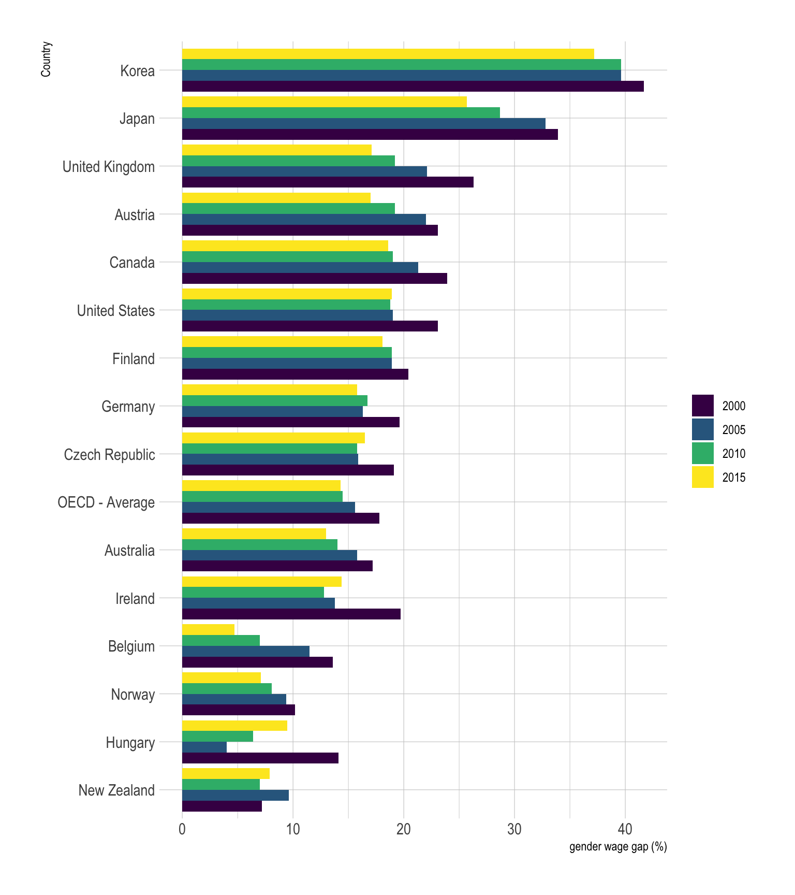
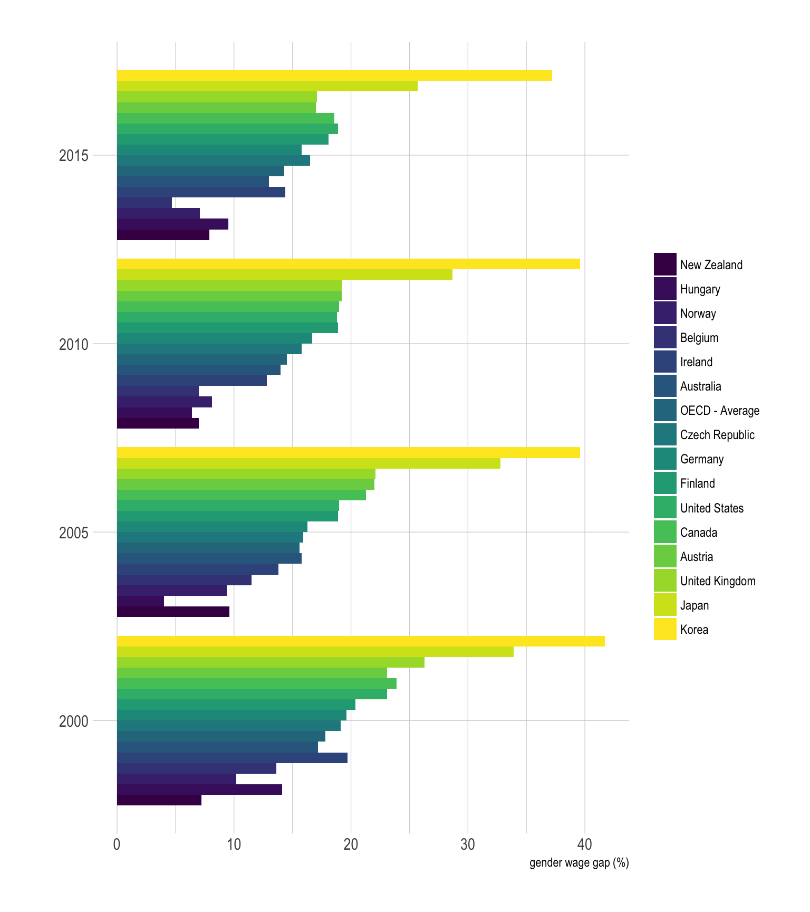
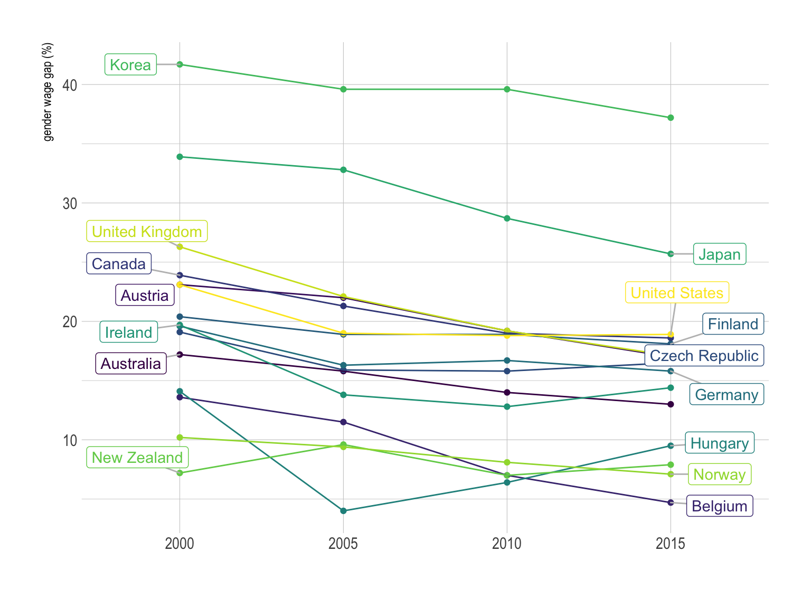
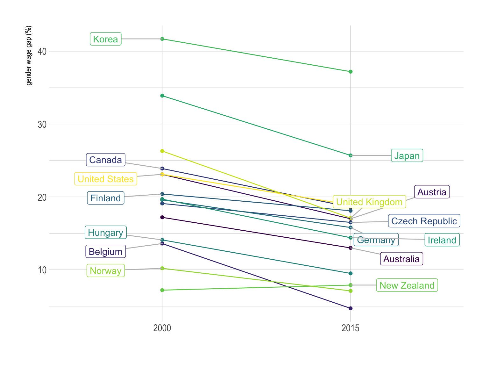

The gender wage gap
A few data analytics ideas from Data-to-Viz.com


This document gives a few suggestions to analyse a dataset composed by a numeric variable measured on groups and subgroups.
The dataset used as an example quantifies the gender wage gap in 39 countries at three different time stamp. The gender wage gap is defined as the difference between male and female median wages divided by the male median wages.
Data have been gathered on the OECD website. A clean version is available at csvformat on github.
# Libraries
library(tidyverse)
library(hrbrthemes)
library(kableExtra)
options(knitr.table.format = "html")
library(viridis)
library(ggrepel)
library(plotly)
# Load dataset from github
data <- read.table("https://raw.githubusercontent.com/holtzy/data_to_viz/master/Example_dataset/9_OneNumSevCatSubgroupOneObs.csv", header=T, sep=",")
# show data
data %>% head(6) %>% kable() %>%
kable_styling(bootstrap_options = "striped", full_width = F)| Country | TIME | Value |
|---|---|---|
| Australia | 2000 | 17.2 |
| Australia | 2005 | 15.8 |
| Australia | 2010 | 14.0 |
| Australia | 2015 | 13.0 |
| Austria | 2000 | 23.1 |
| Austria | 2005 | 22.0 |
The most common way to represent this kind of dataset is probably to build a grouped barplot. In this example, each bar represents a gender wage gap. Bars can be grouped by year or by country depending on what you want to focus on.
This works well if your groups have no logical orders
# List of country with 4 values
with4 <- data %>%
group_by(Country) %>%
summarize(n=n()) %>%
filter(n==4)
# Grouped
data %>%
filter(Country %in% with4$Country) %>%
mutate(Country = fct_reorder(Country, Value)) %>%
mutate(TIME=factor(TIME, levels = c("2000", "2005", "2010", "2015"))) %>%
ggplot(aes(fill=as.factor(TIME), y=Value, x=Country)) +
geom_bar(position="dodge", stat="identity") +
scale_fill_viridis(discrete=T, name="") +
coord_flip() +
theme_ipsum() +
ylab("gender wage gap (%)")
On this graphic, bars are grouped per country. Since country are ordered, it is easy to notice that Korea is the country with the biggest wage gap, followed by Japan and the UK. It is also possible to observe that the gender wage gap globally decreased between 2000 and 2015, but there are clearly better way to represent this idea.
Note that choosing the appropriate grouping variable is important. Let’s check what happens when grouping using the other categoric variable, the year:
# Grouped
data %>%
filter(Country %in% with4$Country) %>%
mutate(Country = fct_reorder(Country, Value)) %>%
mutate(TIME=factor(TIME, levels = c("2000", "2005", "2010", "2015"))) %>%
ggplot(aes(fill=Country, y=Value, x=as.factor(TIME))) +
geom_bar(position="dodge", stat="identity") +
scale_fill_viridis(discrete=T, name="") +
coord_flip() +
theme_ipsum() +
xlab("") +
ylab("gender wage gap (%)")
The result of this grouped barplot is quite disapointing compared to the previous one. This is mainly due to the fact that too many bars are displayed for each year. It gets very hard to make a link with the legend, and the comparison from a year to the other is very complicated as well. Globally, it is better to group bars in a way that minimize the number of bar per group. Moreover, remember that having a legend with more than ~7 groups probably means that there is a better way to represent the information.
# Groups
all <- unique(data$Country)
grp1 <- sample( all, 20)
grp2 <- all[ ! all%in%grp1]
# Grouped
data %>%
filter(Country %in% with4$Country) %>%
filter(Country != "OECD - Average") %>%
mutate(label = if_else(TIME == max(TIME) & Country %in% grp1, as.character(Country), NA_character_)) %>%
mutate(label2 = if_else(TIME == min(TIME) & Country %in% grp2, as.character(Country), NA_character_)) %>%
ggplot( aes(x=as.factor(TIME), y=Value, color=Country, group=Country)) +
geom_point() +
geom_line() +
geom_label_repel( aes(label=label), nudge_x = 0.3, hjust=0, na.rm = TRUE, segment.colour="grey") +
geom_label_repel( aes(label=label2), nudge_x = -0.3, hjust=1, na.rm = TRUE, segment.colour="grey") +
scale_color_viridis(discrete=T, name="") +
theme_ipsum() +
theme(
legend.position ="none"
) +
xlab("") +
ylab("gender wage gap (%)")
The spider chart is a circular version of the parallel coordinates plot where vertical axis are joint in the center of the figure. It is sometimes criticized [1, 2], but I believe in their effectiveness in certain cases, as explained here.
If one of the categoric variable has only two levels, it is possible to build a slope chart that is a specific use case of the parallel coordinates plot. It is very powerful since it describes efficiently both the ranking and the evolution of every country.
# Groups
all <- unique(data$Country)
grp1 <- sample( all, 20)
grp2 <- all[ ! all%in%grp1]
# Grouped
data %>%
filter(Country %in% with4$Country) %>%
filter(Country != "OECD - Average") %>%
filter(TIME %in% c(2000, 2015)) %>%
mutate(label = if_else(TIME == max(TIME) & Country %in% grp1, as.character(Country), NA_character_)) %>%
mutate(label2 = if_else(TIME == min(TIME) & Country %in% grp2, as.character(Country), NA_character_)) %>%
ggplot( aes(x=as.factor(TIME), y=Value, color=Country, group=Country)) +
geom_point() +
geom_line() +
geom_label_repel( aes(label=label), nudge_x = 0.3, hjust=0, na.rm = TRUE, segment.colour="grey") +
geom_label_repel( aes(label=label2), nudge_x = -0.3, hjust=1, na.rm = TRUE, segment.colour="grey") +
scale_color_viridis(discrete=T, name="") +
theme_ipsum() +
theme(
legend.position ="none"
) +
xlab("") +
ylab("gender wage gap (%)")
If one of the grouping variable has 2 levels, it is also possible to build a scatterplot. One level will be on the X axis, the other on the Y axis. Let’s make an example showing the value in the 20’ compared to the 2015’. In this case it is useful to use interactivity: it avoids to have a legend with too many levels.
p <- data %>%
filter(TIME %in% c(2000, 2015)) %>%
spread(key=TIME, value=Value, -1) %>%
filter(`2000`!=-1) %>%
filter(`2015`!=-1) %>%
mutate(text=paste("Country: ",Country, "\n", "Wage gap in 2000: ", `2000`, "%\nWage gap in 2015: ", `2015`, sep="")) %>%
ggplot(aes(x=`2000`, y=`2015`, text=text)) +
geom_point(size=4, alpha=0.6, color="#69b3a2") +
theme_ipsum() +
theme(legend.position="none") +
xlab("Gender wage gap in 2000 (%)") +
ylab("Gender wage gap in 2015 (%)")
ggplotly(p, tooltip="text")You can learn more about each type of graphic presented in this story in the dedicated sections. Click the icon below:
Any thoughts on this? Found any mistake? Have another way to show the data? Please drop me a word on Twitter or in the comment section below:
A work by Yan Holtz for data-to-viz.com